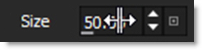

Windows and Adjustments
The Silhouette interface contains multiple windows. Windows can be closed, torn off to be a floating window, or moved to a new location. The upper right portion of the window has two icons: a Minimize/Maximize and a Close icon.
Opening and Closing Windows:
• Click the Close icon to close a window.
• Once a window has been closed, it can be reopened by selecting it from the Window pull-down menu.
Creating Floating Windows:
• Click the Minimize/Maximize icon to make the window a floating window.
Moving Windows:
• Click and drag a window’s title bar and place it in a new location. This moves all of the tabs docked in the window as one unit.
• Click and drag a tab and place it in a new location. This moves only the single tab.
• If you drop the window in the center of an existing window, a tab will be created so that both windows will share the same space. This is the same as the Node, Object, Presets and Notes windows sharing the same location.
• Windows can be docked next to each other. For instance, you can put the Object List to the left of the Trees window with both being docked to the right of the Viewer.
Sashes
By clicking and dragging the sashes, dividing lines between areas of the screen, you can customize the Silhouette interface.
Status Bar
The Status Bar is located at the bottom left of the user interface and displays various messages.
Color Sample
The cursor position color values are shown in the Color Sample staus bar at the bottom right of the screen. From left to right, X/Y coordinates and then red, green, blue and alpha values are displayed.
Pressing the ’ key locks the values which then appear to the left of the live values, while pressing " clears the locked values. Drag and drop the locked color sample onto a color pot to set the color.
Tool Tips
Hovering the cursor over an icon will pop up a tool tip that displays its function.
Parameter Groups
Effect groups in the Node and Object parameter windows can be expanded and collapsed using the angle bracket icons located to the left of the group.

Animate Icons
Animateable parameters in the Parameters and Object windows have an Animate icon to the left of them. Keyframes are set when the Animate icon is enabled (highlighted).

Numeric Keyboard
Single clicking on a numeric field opens a numeric keyboard.
Numeric Fields
Drag on a numeric field to adjust the value. You can adjust any value with finer precision by pressing Ctrl/Cmd while dragging.
Note: When the cursor is hovering over a Numeric Field, the Arrow keys can adjust the value.
Two-Axis Drag
2D control point fields now have an icon, located to the left of Reset, that acts as a two-axis dragger.
Instead of dragging the X or Y parameters, you can click-drag on the icon and the control point will move with respect to the mouse/tablet offset.
Reset Icon
Individual parameters as well as parameter groups can be reset to their default settings using the Reset icon.
Mouse Wheel Adjustments
Hover over a numeric field and use Alt-mouse wheel to adjust it. Use Alt-Shift for a 10 time larger change. Use Alt-Ctrl/Cmd for 10 time smaller change.
Spin Box
Spin boxes change values according to the following key strokes:
• Click = change by 1 pixel.
• Shift-click = change by 10 pixels.
• Ctrl/Cmd-click = change by 0.1 pixel.